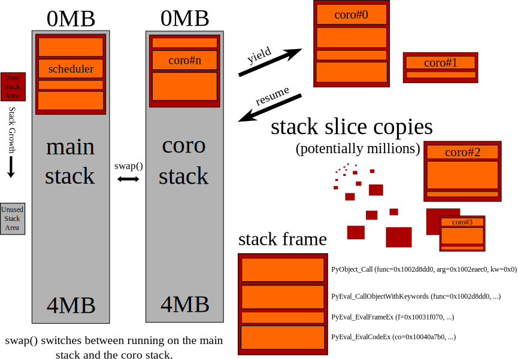

| Date: | $Date: 2012/03/30 $ |
|---|---|
| Author: | Sam Rushing |
Contents
Shrapnel/Coro is a highly scalable cooperative threading facility for CPython.
Shrapnel is a library for high-performance concurrency. It uses coroutines to implement user threads on top of either kqueue (FreeBSD, OS X) or /dev/epoll (linux), and is written mostly in Pyrex/Cython, supporting both 32-bit and 64-bit platforms. It is the culmination of about 8 years of work at IronPort Systems, a provider of high-speed mail appliances. It was open-sourced by Cisco Systems in late 2011.
- Lightweight threads, event-driven scheduler.
- Underneath: non-blocking operations on descriptors, like sockets and pipes.
- On top, synchronous API for straight-line, simple code.
- Highly scalable - tens or hundreds of thousands of connections/threads.
- Thread synchronization primitives, like mutexes, semaphores, etc...
- Wait on kqueue events like file/directory changes, signals, processes, etc... [kqueue only]
- DNS stub resolver (full-fledged resolver may be forthcoming)
- HTTP server and client
- RPC system
- Support for TLS via tlslite (openssl interface may be forthcoming)
- other protocols/codecs: ldap, asn1, ftp, mysql, postgres, AMQP.
- MIT License.
Shrapnel is the name of the implementation. The python package that it implements is coro. It’s actually the third implementation of the coro package written at IronPort - previous versions were written in C using a painful type of continuation-passing style, and relied on variants of Stackless Python.
Requirements:
- Cython (>=0.12.1)
- distribute (>=0.6.16)
Install with:
$ pip install coro
or alternatively download shrapnel from https://github.com/ironport/shrapnel and do the usual setup.py procedure:
$ git clone git://github.com/ironport/shrapnel.git
$ cd shrapnel
$ python setup.py build
$ [sudo] python setup.py install
Everything runs in the event loop. So the last thing your __main__ script will do is always:
coro.event_loop()
Calling this function starts the scheduler, which enters a loop continually running threads that are ready to run, feeding new waitable events to the operating system, and waiting for events to be triggered. When an event is triggered, the thread waiting on that event is awakened.
Because everything runs in the event loop, you can’t interact with the normal python prompt. But you can interact via the ‘backdoor’. The backdoor interface is crucial to development with shrapnel. It allows you to open one or more telnet sessions into the system and interact with a python prompt there. So a common pattern in __main__ is this:
if __name__ == '__main__':
import coro
import coro.backdoor
coro.spawn (coro.backdoor.serve, unix_path='/tmp/xx.bd')
coro.event_loop()
Once this is running, open another terminal window and:
$ telnet /tmp/xx.bd
[It’s important to use the full path, you can’t cd into /tmp and "$telnet xx.bd".]
Go ahead and run shrapnel/docs/tutorial/t0.py now, we’ll use it in the following demonstration:
$ cd shrapnel/docs/tutorial/
$ python t0.py
1: Sat Mar 31 16:28:44 2012 Backdoor started on unix socket /tmp/xx.bd
In another window:
$ telnet /tmp/xx.bd
Trying /tmp/xx.bd...
Connected to (null).
Escape character is '^]'.
Python 2.7.2 (default, Mar 10 2012, 12:30:07)
[GCC 4.2.1 Compatible Clang 3.1 (trunk 149115)]
Copyright (c) 2001-2011 Python Software Foundation.
All Rights Reserved. [etc]
>>>
Note the behavior of I/O to sys.stdout/stderr when using the back door:
>>> print "Howdy"
Howdy
and:
>>> sys.stdout.write ("Hello\n")
Hello
>>>
i.e, they print to the terminal, not the main console.
To send debugging output to the console, use coro.write_stderr() and coro.print_stderr().
From the back door you can poke around in the internals of the system while it’s running:
>>> coro.event_map
{<kevent_key filter=-1 ident=4>: <kevent_target status=1 index=0 target=<coro #1 name='<function serve at 0x1007e1de8>' dead=0 started=1 scheduled=0 at 0x1005c1500> flags=0>, ...}
>>>
>>>
>>> coro.where_all()
{1: ('<function serve at 0x1007e1de8>', <coro #1 name='<function serve at 0x1007e1de8>' dead=0 started=1 scheduled=0 at 0x1005c1500>, '[coro/backdoor.py serve|224]'), ...}
>>>
>>> player_db['annoying_guy23'].demote()
<player annoying_guy23 id=394203 level=peon>
>>>
The sleep_relative() function allow you to put a thread to sleep for a time:
>>> coro.sleep_relative (5)
[5 second pause]
>>>
Start a new thread with coro.spawn():
>>> def thing():
... for x in range (10):
... coro.write_stderr ('%d\n' % (x,))
... coro.sleep_relative (1)
...
>>> coro.spawn (thing)
<coro #5 name='<function thing at 0x10152af50>' dead=0 started=0 scheduled=1 at 0x1005f97b0>
>>>
In the main window you should see a new digit printed every second.
coro.spawn() takes a callable object, args, and keyword args:
coro.spawn (fun0, arg0, arg1, kwd0=val0, kwd1=val1)
Start up 1000 threads:
>>> import random
>>> def thing():
... t = random.randrange (0, 15)
... coro.sleep_relative (t)
... coro.write_stderr ('*')
...
>>> for x in range (1000):
... coro.spawn (thing)
...
>>>
Over the next 15 seconds you should see groups of '*' characters sent to the main window.
Creating a server is easy (see docs/tutorial/t1.py):
import coro
import coro.backdoor
def session (conn, addr):
while 1:
block = conn.recv (1000)
if not block:
break
else:
conn.send (block)
def serve (port=9000):
s = coro.tcp_sock()
s.bind (('', port))
s.listen (50)
while 1:
conn, addr = s.accept()
coro.spawn (session, conn, addr)
if __name__ == '__main__':
coro.spawn (coro.backdoor.serve, unix_path='/tmp/xx.bd')
coro.spawn (serve)
coro.event_loop()
You can telnet into that server:
$ telnet localhost 9000
Trying 127.0.0.1...
Connected to localhost.
Escape character is '^]'.
asdf
asdf
asdf
asdf
asdf
[Hit Ctrl-], c, <return> to close the connection]
One of the nicer features of shrapnel is with_timeout(). Use with_timeout() around any function call:
result = thing.db.query ("SELECT * FROM CANDYBIN;")
with a 30-second timeout becomes:
result = coro.with_timeout (30, thing.db.query, "SELECT * FROM CANDYBIN;")
If the function hasn’t returned within 30 seconds, it will raise coro.TimeoutError:
try:
r = coro.with_timeout (30, function, arg0, arg1, ...)
except coro.TimeoutError:
coro.write_stderr ("Hey, that took too long!\n")
Multiple layers of timeouts work as expected.
Note
Try editing the echo server from above, adding a timeout to the conn.recv (1000) call. Make it so that it exits the loop and closes the connection if nothing is typed within 10 seconds.
You can tell the system to exit:
>>> coro.set_exit()
>>> Connection closed by foreign host.
Note
Try editing the echo server from above, so that it’ll exit the event loop when it receives the string ‘quit\r\n’.
It’s difficult to really beat on that server with your own fingers (and telnet). How about a client that’ll exercise it a little (see docs/tutorial/t2.py):
import coro
def client (ip='127.0.0.1', port=9000):
global alive
alive += 1
try:
s = coro.tcp_sock()
s.connect ((ip, port))
for i in range (10):
s.send ('howdy there\r\n')
assert (s.recv_exact (13) == 'howdy there\r\n')
coro.write_stderr ('.')
s.close()
finally:
alive -= 1
if alive == 0:
coro.write_stderr ('\ndone.\n')
coro.set_exit()
if __name__ == '__main__':
alive = 0
for i in range (100):
coro.spawn (client)
coro.event_loop()
Hit Ctrl-C to exit.
You should just see a hundred dots in the main window. You might get connection reset errors if the listen() parameter in the server wasn’t high enough. If so, you could put some calls to sleep_relative() in there to stagger the creation of the clients.
This is a handy little server that lets you ‘spy’ on protocols. It’s very handy when implementing protocols. See docs/tutorial/proxy.py.
import coro
W = coro.write_stderr
class session:
counter = 0
def __init__ (self, conn, addr, saddr):
self.conn = conn
self.addr = addr
self.saddr = saddr
self.id = session.counter
session.counter += 1
self.proxy = coro.tcp_sock()
self.proxy.connect (saddr)
coro.spawn (self.feed, self.conn, self.proxy, '<==')
coro.spawn (self.feed, self.proxy, self.conn, '==>')
def feed (self, c0, c1, dir):
try:
while 1:
block = c0.recv (1000)
W ('%s %d %r\n' % (dir, self.id, block))
if not block:
break
else:
c1.send (block)
finally:
c0.close()
def serve (saddr):
ip, port = saddr
s = coro.tcp_sock()
s.bind (('0.0.0.0', port + 9000))
s.listen (5)
while 1:
conn, caddr = s.accept()
coro.spawn (session, conn, caddr, saddr)
if __name__ == '__main__':
import sys
if len (sys.argv) < 3:
print 'Usage: %s <server-host> <server-port>' % sys.argv[0]
else:
coro.spawn (serve, (sys.argv[1], int (sys.argv[2])))
coro.event_loop()
Let’s say you want to spy on an HTTP connection:
$ python proxy.py 72.52.84.226 80
The proxy works by adding 9000 to the port number you’re connecting to.
Try this link: http://localhost:9080/tutorial_hello.html
Shrapnel comes with an efficient and comprehensive profiler that accounts for the resources used by each thread. On most platforms it uses the RDTSC instruction to gather accurate timings with low overhead. It profiles both Python and Cython code:
import coro.profiler
#coro.event_loop()
coro.profiler.go (coro.event_loop)
By default it collects data from the rusage() facility and RDTSC, see the documentation for details.
When the function you are profiling has exited, it will dump a binary file containing the results (default: /tmp/coro_profile.bin), which you can post-process using the coro.print_profile module:
$ python coro/print_profile.py /tmp/coro_profile.bin > /tmp/p0.html
Pull that up in your browser, you’ll find aggregate and non-aggregate tables, along with a call graph.
Non-Aggregate Timings
| calls | ticks | ticks/call | utime | utime/call | stime | stime/call | minflt | majflt | oublock | msgsnd | msgrcv | Function |
|---|---|---|---|---|---|---|---|---|---|---|---|---|
| 0 | 29552069532 | 29552069532 | 0.022320 | 0.02232 | 0.031529 | 0.031529 | 0 | 0 | 0 | 0 | 0 | <wait> |
| 4540 | 299809652 (15.86%) | 66037 | 0.118307 (16.70%) | 0.000026 | 0.013881 (10.17%) | 0.000003 | 2 (4.88%) | 0 | 0 | 0 | 0 | python/worms.py:move:141 |
| 0 | 227071913 (12.01%) | 227071913 | 0.093381 (13.18%) | 0.093381 | 0.010697 (7.84%) | 0.010697 | 3 (7.32%) | 0 | 0 | 0 | 0 | <main> |
| 4783 | 192461416 (10.18%) | 40238 | 0.072527 (10.24%) | 0.000015 | 0.012591 (9.22%) | 0.000003 | 1 (2.44%) | 0 | 0 | 0 | 0 | python2.7/random.py:randrange:173 |
| 2420 | 171570517 (9.08%) | 70896 | 0.069622 (9.83%) | 0.000029 | 0.006048 (4.43%) | 0.000002 | 1 (2.44%) | 0 | 0 | 0 | 0 | python/worms.py:draw:185 |
From the call graph section:
__builtin__:dict.has_key -- ticks=15234 utime=6e-06 stime=1e-06
3/3 (100.0%) coro/__init__.py:spawn:337
3 __builtin__:dict.has_key
__builtin__:file.write -- ticks=263623 utime=4.1e-05 stime=7.5e-05
7/7 (100.0%) python/worms.py:status:230
7 __builtin__:file.write
__builtin__:len -- ticks=28508261 utime=0.010467 stime=0.002547
14/4884 (00.3%) python/worms.py:status:230
330/4884 (06.8%) python2.7/random.py:choice:272
4540/4884 (93.0%) python/worms.py:move:141
4884 __builtin__:len
[...]
Example of the full profiler output. Note: each graph may be [re]sorted by clicking on a column header.
See docs/tutorial/worms.py for a fun demo. Run the script from one terminal, and telnet into it from another terminal with a nice large window (your terminal needs to support ANSI escape codes).
Each worm is its own thread, and each socket client has a separate view into the shared ‘arena’. This demo can easily handle hundreds of separate worms (though things tend to get crowded):
+=========================================================================+
| **********d|
| 9 |
| 9 |
| 9 |
| 9 |
| 9 |
| 9 |
| 9 |
| 9 |
| 9 |
| 9 |
| 9 |
| |
| |
| b a |
| b a |
| b a |
| b a 1 |
| eeeeee b a 1 |
| e b a 1 |
| e b a1111111 |
| e b a1 |
| e b a |
| e b a |
| b a |
| f |
| f |
| f |
| f |
| f |
| ffffff |
+=========================================================================+
keys: [q]uit [r]edraw [n]ew [c]ull [l]engthen [h]offa
Here’s the code controlling each worm’s movement:
def go (self):
try:
while not self.exit:
coro.sleep_relative (self.speed / 10000.0)
if random.randrange (0,20) == 10:
if not self.turn():
return
else:
nx, ny = self.update()
while self.arena[(nx,ny)] != ' ':
if not self.turn():
return
nx, ny = self.update()
self.move ((nx, ny))
finally:
self.arena.worms.remove (self)
To come: a separate tutorial on hardening servers against attack. I think this would be a great example to work with.
What happens when there’s an unhandled exception in a thread?:
>>> def thing():
... return 1/0
...
>>> coro.spawn (thing)
<coro #205 name='<function thing at 0x1007e6758>' dead=0 started=0 scheduled=1 at 0x1005cf040>
>>>
You should see something like this in the main window:
205: Sat Mar 31 17:29:06 2012 thread 205 (<function thing at 0x1007e6758>): error
'(\'<coro.backdoor.backdoor instance at 0x1007decf8> thing|2\',
"<type \'exceptions.ZeroDivisionError\'>", \'integer division or modulo by zero\',
\'[_coro.pyx coro._coro._wrap1 (coro/_coro.c:8821)|800] [<coro.backdoor.backdoor instance at 0x1007decf8> thing|2]\')'
The default exception handler for a thread prints a timestamp, some info about the thread that crashed, and a compact, one-line traceback.
You can replace the default handler with coro.set_exception_notifier().
It’s important that no thread monopolizes the CPU for too long. This can happen if you inadvertently call a blocking system function (e.g., filesystem I/O). To assist you in finding bugs that do this, the scheduler will print out a warning like this:
Wed Apr 4 00:29:01 2012 High Latency: (5.449s) for <coro #4 name='mp4 encoder' at 0x1003ceaa0>
Any thread that holds the CPU for more than 0.2s will trigger the warning. You can change the trigger value with coro.set_latency_warning().
If two threads try to perform the same I/O operation (technically, wait on the same kevent), this will trigger a SimultaneousError:
>>> coro.x.recv (100)
Traceback (most recent call last):
File "/usr/local/lib/python2.7/site-packages/coro/backdoor.py", line 144, in parse
result = eval (co, env)
File "<coro.backdoor.backdoor instance at 0x100624ef0>", line 1, in <module>
File "socket.pyx", line 580, in coro._coro.sock.recv (coro/_coro.c:20208)
File "socket.pyx", line 1113, in coro._coro.sock._wait_for_read (coro/_coro.c:23549)
File "poller.pyx", line 326, in coro._coro.queue_poller._wait_for_read (coro/_coro.c:15292)
File "poller.pyx", line 318, in coro._coro.queue_poller._wait_for_with_eof (coro/_coro.c:15204)
File "poller.pyx", line 342, in coro._coro.queue_poller._wait_for (coro/_coro.c:15516)
File "poller.pyx", line 304, in coro._coro.queue_poller.set_wait_for (coro/_coro.c:15056)
SimultaneousError: <SimultaneousError co=<coro #6 name='backdoor session' dead=0 started=1 scheduled=0 at 0x1003ceaa0> other=<coro #5 name='backdoor session' dead=0 started=1 scheduled=0 at 0x1003d0080> event=<kevent_key filter=-1 ident=0>>
>>>
You can easily avoid this problem by isolating particular events to their own thread. For example, you can have one thread that reads from a socket, while another writes to it. You can combine identical events from multiple threads by using one of the synchronization primitives. A common idiom uses a coro.fifo:
def writer (self):
while not self.exit:
data = self.fifo.pop()
if data is None:
break
else:
self.conn.send (data)
In this example we use a sentinel (None) to force the fifo to wake up and exit the loop. This is similar to a generator’s use of StopIteration.
Blocking calls. Slow file I/O. Not closing descriptors. Threads. etc.
Shrapnel works by using two (or more) C stacks. The first stack (the default one from libc) runs the scheduler, which is responsible for switching out coro threads, managing the timed-events queue, and calling kevent (or hitting /dev/epoll). The second stack is where coro threads run. When it’s time for a thread to run, its stack contents are copied from the heap onto the second stack, and a small amount of assembly code (similar to the ucontext facility) resumes it. When a thread yields, the portion of the stack used by that thread is evacuated into the heap.
This design allows Shrapnel to work with a completely stock CPython. It has been used continuously with Python 2.3 to 2.7, and can usually be linked as a shared library against the platform’s OEM install of Python.
[Get a comprehensive list of everyone that’s contributed to shrapnel, maybe with home page links?]